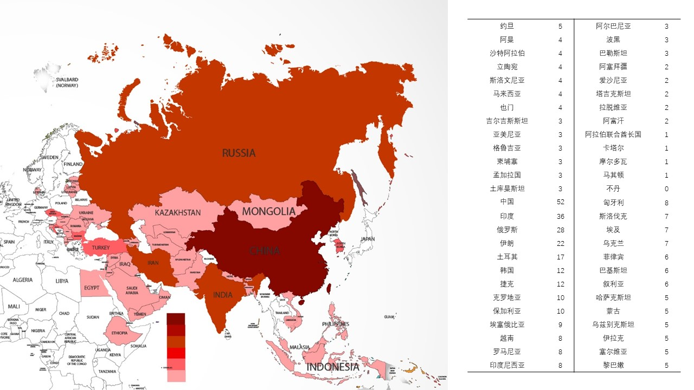

王乐是厦门人，最近因为鼓浪屿申遗成功，他在暑期又一次踏上了这座小岛。
今年，是中国申遗成功的第三十年，同时随着鼓浪屿和可可西里的申遗成功，中国拥有世界遗产数达到52项，跃身成为全球第二大世界遗产国。
什么是世界遗产？
世界遗产是指被联合国教科文组织和世界遗产委员会确认的人类罕见的、目前无法替代的财富，是全人类公认的具有突出意义和普遍价值的文物古迹及自然景观，成为世界遗产的标志是遗产列入《世界遗产名录》。
从1987年至2017年，三十年间《世界遗产名录》共列入中国世界文化遗产30项、世界自然遗产13项、世界文化与自然遗产4项和文化景观4项。中国世界遗产的分布、评定标准、申遗的类型、申遗的方式和态势......这些数据折射出中国三十年申遗之路，以及中国遗产保护的足迹。
Find Out More我国于1985年12月成为联合国教科文组织世界遗产委员会成员国。
从1985年加入《保护世界文化和自然遗产公约》、1987年诞生首批6处世界遗产，中国的世界遗产之旅走过了30多年不平凡的历程。党的十八大以来，我国文化遗产保护和世界文化遗产事业迎来历史性的发展机遇，拥有了大运河、丝绸之路等举世瞩目的巨型世界遗产，红河哈尼梯田、土司遗址、花山岩画、“鼓浪屿：历史国际社区”成功入遗，中国世界遗产后来者居上，实现跨越式发展。
自1987年第一批 遗产成功入选《世界遗产名录》以来，到可可西里和鼓浪屿的申遗成功，我国拥有了 52处世界遗产，成为世界遗产数量第二大的国家，比排名第一的意大利仅少一处。
今年是我国成功申遗30周年。30年来，我国的世界遗产事业不断发展壮大，成为名副其实的“世遗”大国。
世界遗产催生的“文化遗产热”燃遍神州大地，文化遗产不再是远离民众、没有生命的化石，它所具有的广泛社会意义得到重新审视。“文化遗产活了起来”。文化遗产不再仅仅被看作历史的见证，还被当作社会共享的文化资源和文化财富，强调保护前提下的合理利用、传承及对现代文明创新事业的参与。
今年是中国申遗第三十年，五十二项世界遗产究竟通过什么流程被录入《世界遗产名录》。
拥有三千年古都历史的北京是世界上拥有世界遗产最多的城市，共计7项世界遗产；紧随其后的是中华民族与华夏文明的发源地河南，拥有6项世界遗产；云南和四川以5项世界遗产位居第三。上海、海南、香港和台湾是中国仅有的4个没有遗产的省区。
成为世界遗产数量第二的国家，这其中有我国的幅员辽阔、历史悠久的客观原因。
但事在人为，申遗成功所带来的热度增长并由此引来的旅游收益，可能也是地方政府积极申遗的内在驱动力。
申遗成功无疑是一个巨大的关注度引爆点。在可可西里和鼓浪屿的申遗成功后，其在携程网上的搜索量就分别增长了百分之50和百分之60，而其百度指数更是爆炸性的增长。
根据2016年各省的旅游收入与所拥有的世界遗产数量的数据对比，我们可以看到，各省的旅游收入虽然与所拥有的遗产数量呈正相关，但遗产的数量对旅游收入并非是起决定作用。
通过相关分析，在95%的置信度下，各省旅游收入与世界遗产数量相关系数为0.21，可以说二者相关性较为微弱。
如2016年时广东仅有两处世界遗产，但其国际旅游外汇收入却达17884.66百万美元，居全国第一。
丝绸之路孕育了新的一带一路，而今天，一带一路带来的不仅仅是经济的新机遇，也是文化上的“粘合剂”，带来了文化的交流与融合。
中国地大物博，也是人类文明的发源地之一，世界遗产数目是一带一路国家中最多的，达到52个。
近邻印度则有31处景观入选世界遗产，被称为文明摇篮的土耳其同样拥有多达17个世界遗产。
中国入选的世界遗产不仅是中国的宝藏，也是全世界的瑰宝。
中国申遗三十年，“不忘本来才能开创未来，善于继承方能更好创新。”
把文化遗产更好融入现代生活，既是文化遗产保护和传承的需要，更是造就现代公民、培育新型社会、建设创新型国家的必需。